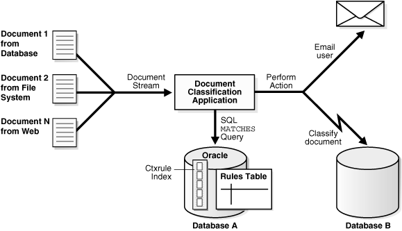

2 Getting Started with Oracle Text
This chapter discuses the following topics:
2.1 Overview of Getting Started with Oracle Text
This chapter provides basic information about how to create an Oracle Text developer user account, and how to build simple text query and catalog applications. It also provides information about basic SQL statements for each type of application to load, index, and query tables.
More complete application examples are given in the Appendices.
Note:
The SQL> prompt has been omitted in this chapter, in part to improve readability and in part to make it easier for you to cut and paste text.
See Also:
" Classifying Documents in Oracle Text" to learn more about building document classification applications
2.2 Creating an Oracle Text User
Before you can create Oracle Text indexes and use Oracle Text PL/SQL packages, you need to create a user with the CTXAPP role. This role enables you to do the following:
-
Create and delete Oracle Text indexing preferences
-
Use the Oracle Text PL/SQL packages
To create an Oracle Text application developer user, perform the following steps as the system administrator user:
2.3 Query Application Quick Tour
In a basic text query application, users enter query words or phrases and expect the application to return a list of documents that best match the query. Such an application involves creating a CONTEXT index and querying it with CONTAINS.
Typically, query applications require a user interface. An example of how to build such a query application using the CONTEXT index type is given in CONTEXT Query Application.
The examples in this section provide the basic SQL statements to load the text table, index the documents, and query the index.
2.3.1 Creating the Text Table
Perform the following steps to create and load documents into a table.
2.3.2 Using SQL*Loader to Load the Table
You can perform the following steps to optionally load your table in batch with SQL*Loader.
See Also:
"Building the PSP Web Application" for an example on how to use SQL*Loader to load a text table from a data file
2.3.2.1 Step 1 Create the CONTEXT index
Index the HTML files by creating a CONTEXT index on the text column as follows. Because you are indexing HTML, this example uses the NULL_FILTER preference type for no filtering and the HTML_SECTION_GROUP type:
CREATE INDEX idx_docs ON docs(text)
INDEXTYPE IS CTXSYS.CONTEXT PARAMETERS
('FILTER CTXSYS.NULL_FILTER SECTION GROUP CTXSYS.HTML_SECTION_GROUP');
Use the NULL_FILTER, because you do not need to filter HTML documents during indexing. However, if you index PDF, Microsoft Word, or other formatted documents, then use the CTXSYS.AUTO_FILTER (the default) as your FILTER preference.
This example also uses the HTML_SECTION_GROUP section group, which is recommended for indexing HTML documents. Using HTML_SECTION_GROUP enables you to search within specific HTML tags and eliminates from the index unwanted markup such as font information.
2.3.2.2 Step 2 Querying Your Table with CONTAINS
First, set the format of the SELECT statement's output so it is easily readable. Set the width of the text column to 40 characters:
COLUMN text FORMAT a40;
Now query the table with the SELECT statement with CONTAINS. This retrieves the document IDs that satisfy the query. The following query looks for all documents that contain the word France:
SELECT SCORE(1), id, text FROM docs WHERE CONTAINS(text, 'France', 1) > 0;
SCORE(1) ID TEXT
---------- ---------- ----------------------------------------
4 3 <HTML>France is in Europe.</HTML>
4 2 <HTML>Paris is a city in France.</HTML>2.3.2.3 Step 3 Present the Document
In a real application, you might want to present the selected document to the user with query terms highlighted. Oracle Text enables you to mark up documents with the CTX_DOC package.
We can demonstrate HTML document markup with an anonymous PL/SQL block in SQL*Plus. However, in a real application you might present the document in a browser.
This PL/SQL example uses the in-memory version of CTX_DOC.MARKUP to highlight the word France in document 3. It allocates a temporary CLOB (Character Large Object datatype) to store the markup text and reads it back to the standard output. The CLOB is then de-allocated before exiting:
SET SERVEROUTPUT ON;
DECLARE
2 mklob CLOB;
3 amt NUMBER := 40;
4 line VARCHAR2(80);
5 BEGIN
6 CTX_DOC.MARKUP('idx_docs','3','France', mklob);
7 DBMS_LOB.READ(mklob, amt, 1, line);
8 DBMS_OUTPUT.PUT_LINE('FIRST 40 CHARS ARE:'||line);
9 DBMS_LOB.FREETEMPORARY(mklob);
10 END;
11 /
FIRST 40 CHARS ARE:<HTML><<<France>>> is in Europe.</HTML>
PL/SQL procedure successfully completed.2.3.2.4 Step 4 Synchronize the Index After Data Manipulation
When you create a CONTEXT index, you need to explicitly synchronize your index to keep it up to date with any inserts, updates, or deletes to the text table.
Oracle Text enables you to do so with the CTX_DDL.SYNC_INDEX procedure.
Add some rows to the docs table:
INSERT INTO docs VALUES(4, '<HTML>Los Angeles is a city in California.</HTML>'); INSERT INTO docs VALUES(5, '<HTML>Mexico City is big.</HTML>');
Because the index is not synchronized, these new rows are not returned with a query on city:
SELECT SCORE(1), id, text FROM docs WHERE CONTAINS(text, 'city', 1) > 0;
SCORE(1) ID TEXT
---------- ---------- --------------------------------------------------
4 2 <HTML>Paris is a city in France.</HTML>
Therefore, synchronize the index with 2Mb of memory, and rerun the query:
EXEC CTX_DDL.SYNC_INDEX('idx_docs', '2M');
PL/SQL procedure successfully completed.
COLUMN text FORMAT a50;
SELECT SCORE(1), id, text FROM docs WHERE CONTAINS(text, 'city', 1) > 0;
SCORE(1) ID TEXT
---------- ---------- --------------------------------------------------
4 5 <HTML>Mexico City is big.</HTML>
4 4 <HTML>Los Angeles is a city in California.</HTML>
4 2 <HTML>Paris is a city in France.</HTML>2.4 Catalog Application Quick Tour
The examples in this section provide the basic SQL statements to create a catalog index for an auction site that sells electronic equipment, such as cameras and CD players. New inventory is added everyday and item descriptions, bid dates, and prices must be stored together.
The application requires good response time for mixed queries. The key is to determine what columns users frequently search to create a suitable CTXCAT index. Queries on this type of index are entered with the CATSEARCH operator.
Note:
Typically, query applications require a user interface. An example of how to build such a query application using the CATSEARCH index type is given in CATSEARCH Query Application .
2.4.2 Using SQL*Loader to Load the Table
You can perform the steps in this section to optionally load your table in batch with SQL*Loader.
See Also:
"Building the PSP Web Application" for an example on how to use SQL*Loader to load a text table from a data file
2.4.2.1 Step 1 Determine your Queries
Determine what criteria are likely to be retrieved. In this example, you determine that all queries search the title column for item descriptions, and most queries order by price. When using the CATSEARCH operator later, we'll specify the terms for the text column and the criteria for the structured clause.
2.4.2.2 Step 2 Create the Sub-Index to Order by Price
For Oracle Text to serve these queries efficiently, we need a sub-index for the price column, because our queries will order by price.
Therefore, create an index set called auction_set and add a sub-index for the price column:
EXEC CTX_DDL.CREATE_INDEX_SET('auction_iset');
EXEC CTX_DDL.ADD_INDEX('auction_iset','price'); /* sub-index A*/2.4.2.3 Step 3 Create the CTXCAT Index
Create the combined catalog index on the AUCTION table with CREATE INDEX as follows:
CREATE INDEX auction_titlex ON AUCTION(title) INDEXTYPE IS CTXSYS.CTXCAT PARAMETERS ('index set auction_iset');
Figure 2-1 shows how the CTXCAT index and its sub-index relates to the columns.
Figure 2-1 Auction table schema and CTXCAT index

Description of "Figure 2-1 Auction table schema and CTXCAT index"
2.4.2.4 Step 4 Querying Your Table with CATSEARCH
When you have created the CTXCAT index on the AUCTION table, you can query this index with the CATSEARCH operator.
First set the output format to make the output readable:
COLUMN title FORMAT a40;
Now run the query:
SELECT title, price FROM auction WHERE CATSEARCH(title, 'CAMERA', 'order by price')> 0;
TITLE PRICE
--------------- ----------
PENTAX CAMERA 200
CANON CAMERA 250
OLYMPUS CAMERA 300
NIKON CAMERA 400
SELECT title, price FROM auction WHERE CATSEARCH(title, 'CAMERA',
'price <= 300')>0;
TITLE PRICE
--------------- ----------
PENTAX CAMERA 200
CANON CAMERA 250
OLYMPUS CAMERA 3002.4.2.5 Step 5 Update Your Table
Update your catalog table by adding new rows. When you do so, the CTXCAT index is automatically synchronized to reflect the change.
For example, add the following new rows to our table and then rerun the query:
INSERT INTO AUCTION VALUES(5, 'FUJI CAMERA', 1, 350, '28-OCT-2002'); INSERT INTO AUCTION VALUES(6, 'SONY CAMERA', 1, 310, '28-OCT-2002'); SELECT title, price FROM auction WHERE CATSEARCH(title, 'CAMERA', 'order by price')> 0; TITLE PRICE ----------------------------------- ---------- PENTAX CAMERA 200 CANON CAMERA 250 OLYMPUS CAMERA 300 SONY CAMERA 310 FUJI CAMERA 350 NIKON CAMERA 400 6 rows selected.
Note how the added rows show up immediately in the query.
2.5 Classification Application Quick Tour
The function of a classification application is to perform some action based on document content. These actions can include assigning a category ID to a document or sending the document to a user. The result is classification of a document.
This section contains the following sections.
2.5.1 About Classification of a Document
Documents are classified according to predefined rules. These rules select for a category. For instance, a query rule of 'presidential elections' might select documents for a category about politics.
Oracle Text provides several types of classification. One type is simple, or rule-based classification, discussed here, in which you create both document categories and the rules for categorizing documents. With supervised classification, Oracle Text derives the rules from a set of training documents you provide. With clustering, Oracle Text does all the work for you, deriving both rules and categories.
See Also:
"Overview of Document Classification" for more information on classification
To create a simple classification application for document content using Oracle Text, you create rules. Rules are essentially a table of queries that categorize document content. You index these rules in a CTXRULE index. To classify an incoming stream of text, use the MATCHES operator in the WHERE clause of a SELECT statement. See Figure 2-2 for the general flow of a classification application.
Figure 2-2 Overview of a Document Classification Application
Description of "Figure 2-2 Overview of a Document Classification Application"